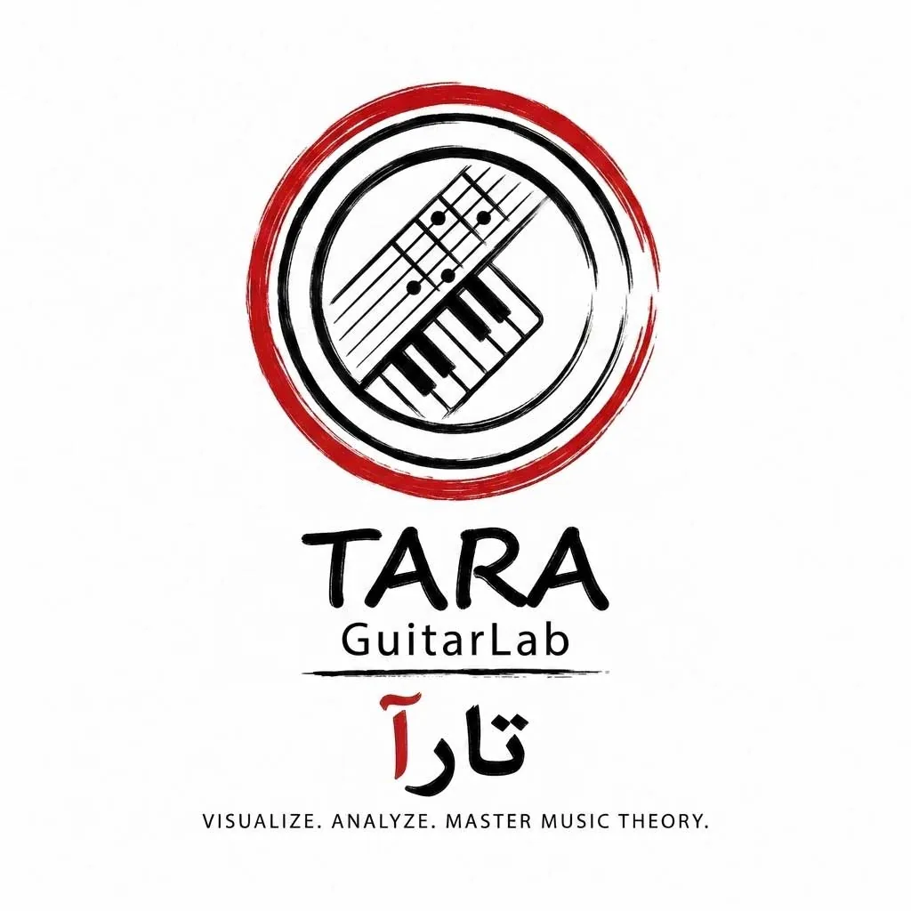
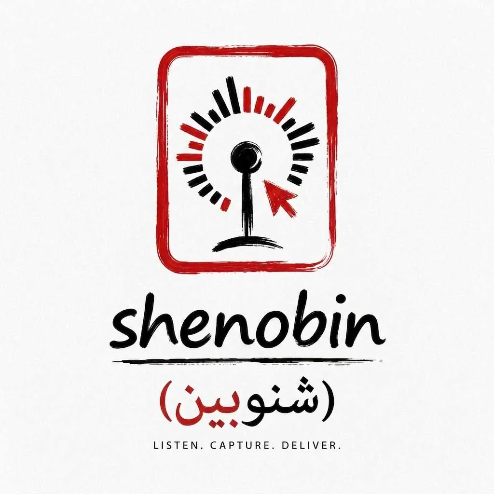
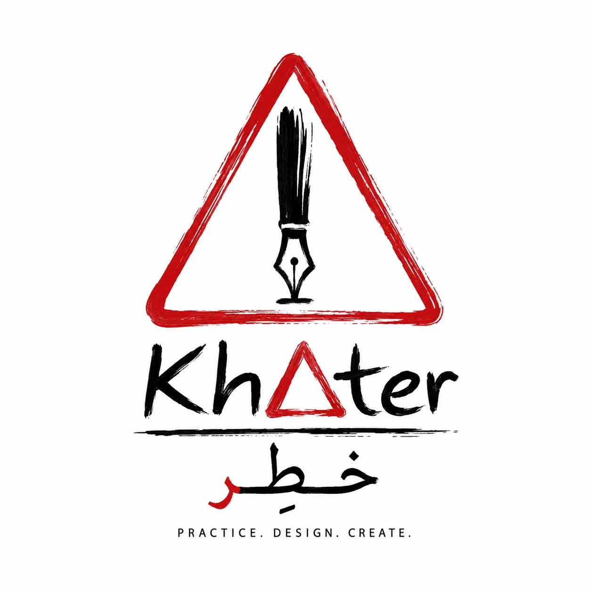
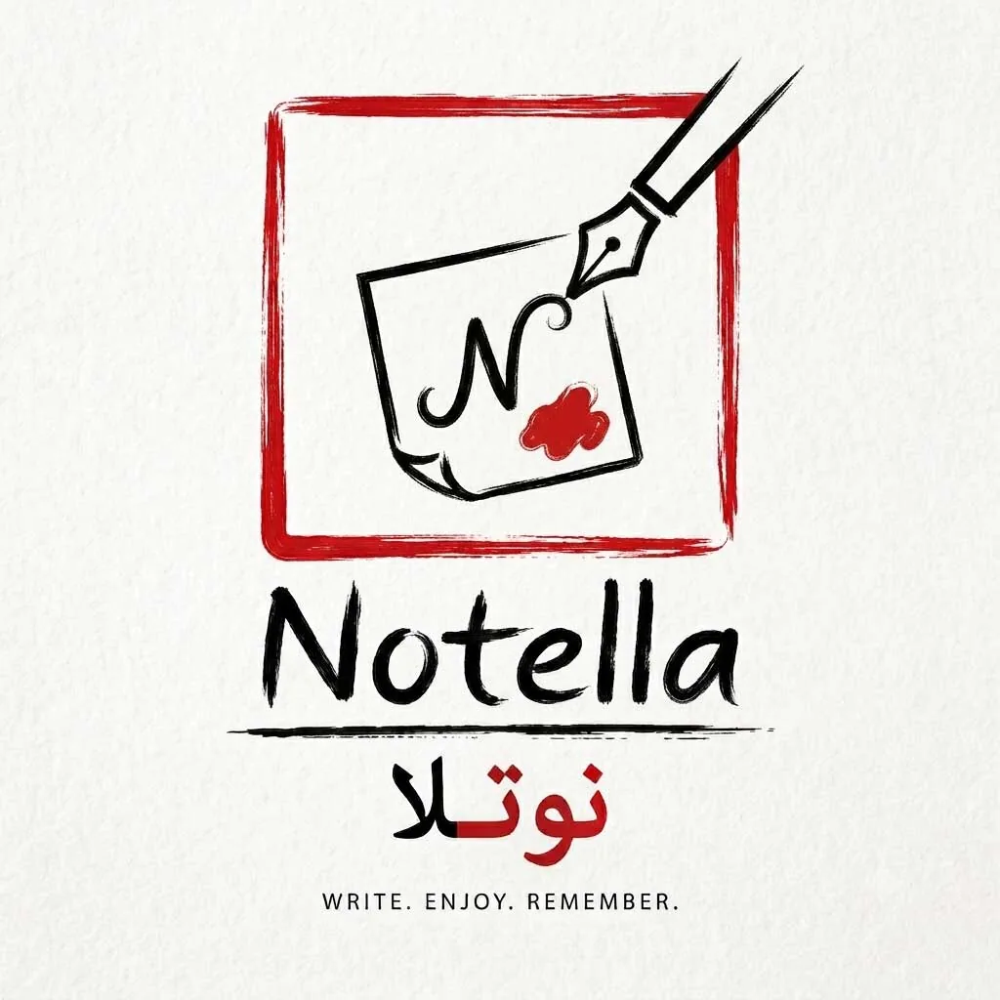
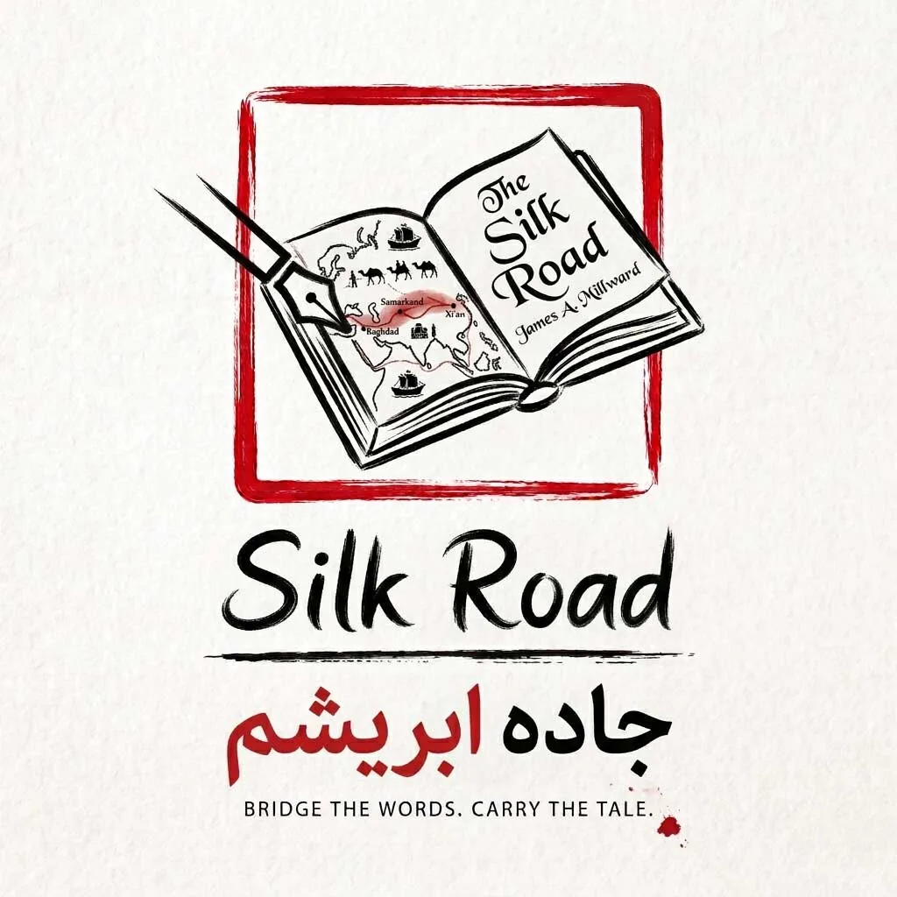
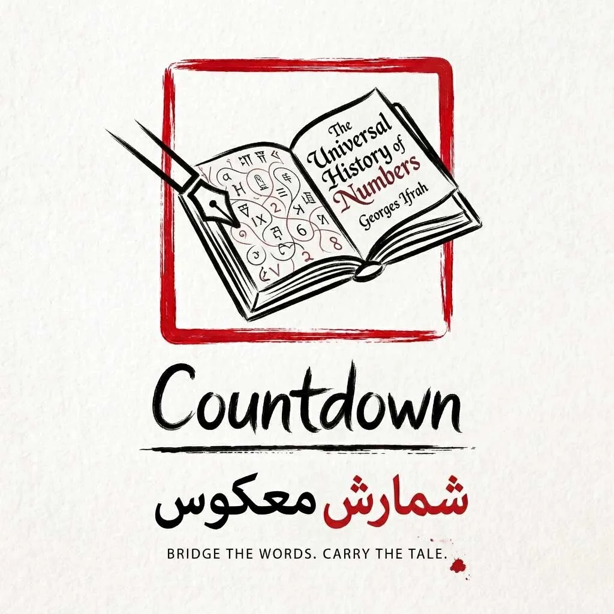

سروش زندهدل Soroush Zendedel
تکنیکال آرتیست و برنامهنویس Technical Artist & Creative Programmer
پیشهام برنامهنویسیست و به هنر علاقهمندم... I build digital tools and experiences for music, writing, and creative ideas.
ارتباط با منGet in touchمن؟ منم مثل همه بندهی خدا.
بین دنیای فکر و احساس قدم میزنم. از تکنولوژی و هنر یاد میگیرم، سعی میکنم هر روز دست به یک کار کوچیک جدید بزنم، اشتباه کنم، یاد بگیرم و قدمبهقدم جلو برم. ایراد زیاد دارم، ولی تلاش میکنم مسیرم رو آگاهانهتر و صادقانهتر طی کنم، به امید اینکه ارتباطهام واقعیتر باشن و حضورم برای آدمهایی که باهاشون در ارتباطم، مفید یا دلگرمکننده باشه.
گاهی هم فقط نگاه میکنم و با خودم میگم:
"ادامه دادنم شاید فعلا فایدهای نداشته باشه، ولی ضرری هم نداره!"
و همین برای برداشتن قدم بعدی کافیه.
Me? I'm just an ordinary creation.
I walk the line between thought and emotion. Learning from technology and art, I try to take a small new step every day, make mistakes, learn, and move forward. I have many flaws, but I strive to walk my path more consciously and honestly, hoping my connections become more real and my presence comforting to those around me.
Sometimes I just look and tell myself: "Continuing might not have a clear benefit right now, but it does no harm either!" ... and that is enough to take the next step.
شاید کمی خالی، شاید کمی پر، درست مثل دل..
برنامهنویسی که با موسیقی نفس میکشه.
دانشآموختهی مهندسی فناوری اطلاعات.
بین کد و کلمات، به دنبال معنا و بهتر کردن زندگیِ هر روزم.
عاشق گفتگو درباره هنر، موسیقی، و دنیای دیجیتال.
و باور دارم دنیای بهتر ساخته میشه، با خلاقیت، آگاهی، و فقط یک قدم رو به جلو در هر روز (و یا شب).
Perhaps a bit empty, perhaps a bit full, just like a heart..
A programmer who breathes with music.
IT Engineering graduate.
Between codes and words, searching for meaning to better my everyday life.
Passionate about art, music, and the digital world.
And I believe a better world is built with creativity, awareness, and just one step forward every day.
پروژهها Projects

تارا | Tara Tara
ابزاری دیداری برای یادگیری و تمرین تئوری موسیقی.An interactive tool for learning and practicing music theory.

شنوبین | Shenobin Shenobin
محیطی برای ساخت موسیقی، بررسی هارمونی و خروجی گرفتن از ایدهها به MIDI یا WAV.A browser based music studio for composing, exploring harmony, and exporting ideas to MIDI or WAV.

خطِر | Khater Khater
ابزاری برای تمرین، طراحی و ساخت فونت.A tool for practicing, designing, and creating fonts.

نوتلا | Notella Notella
اپلیکیشن یادداشتبرداری با رابط خط فرمان و وب؛ یادداشتها بهصورت محلی ذخیره میشوند.A Python note taking app with CLI and web interfaces; notes are stored locally.

جاده ابریشم | Silk Road Silk Road
پروژهای با تمرکز بر واژهها و روایتهای جاده ابریشم.A project centered on the words and stories of the Silk Road.

شمارش معکوس | Countdown Countdown
پژوشهای شمارش معکوس برای دیدن گذر زمان و تاریخ اعداد.A countdown tool for keeping time visible and focus on track.
ثبتاحـــوال (بلاگ) SABTE AHVAL (Personal Blog)
Chronicle Thoughts. Register Life.
دفتری برای نوشتهها، درددلها و اشعار A journal for writings, inner thoughts, and poetry.